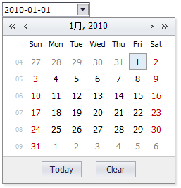

mini.DatePicker
日期选择输入框。
Extend
PopupEdit
Usage
<input id="date1" class="mini-datepicker" value="2010-01-01" />
Screenshots

Examples
DatePicker
Properties
| Name | Type | Description | Default | Set? | Get? | Tag? |
|---|
| value |
Date |
值 |
|
√ | √ | √ |
| format |
String |
格式化字符串 |
yyyy-MM-dd |
√ | √ | √ |
| showTime |
Boolean |
显示时间 |
false |
√ | √ | √ |
| timeFormat |
String |
时间格式化字符串 |
H:mm |
√ | √ | √ |
| viewDate |
Date |
下拉默认显示日期 |
|
√ | √ | √ |
Methods
| Name | Parameter | Description | Return |
|---|
| setValue（value） |
|
设置值 |
|
| getValue（） |
|
获取值 |
|
| getFormValue（） |
|
获取表单值 |
String |
Events
| Name | EventObject | Description |
|---|
| valuechanged |
|
值改变时发生 |